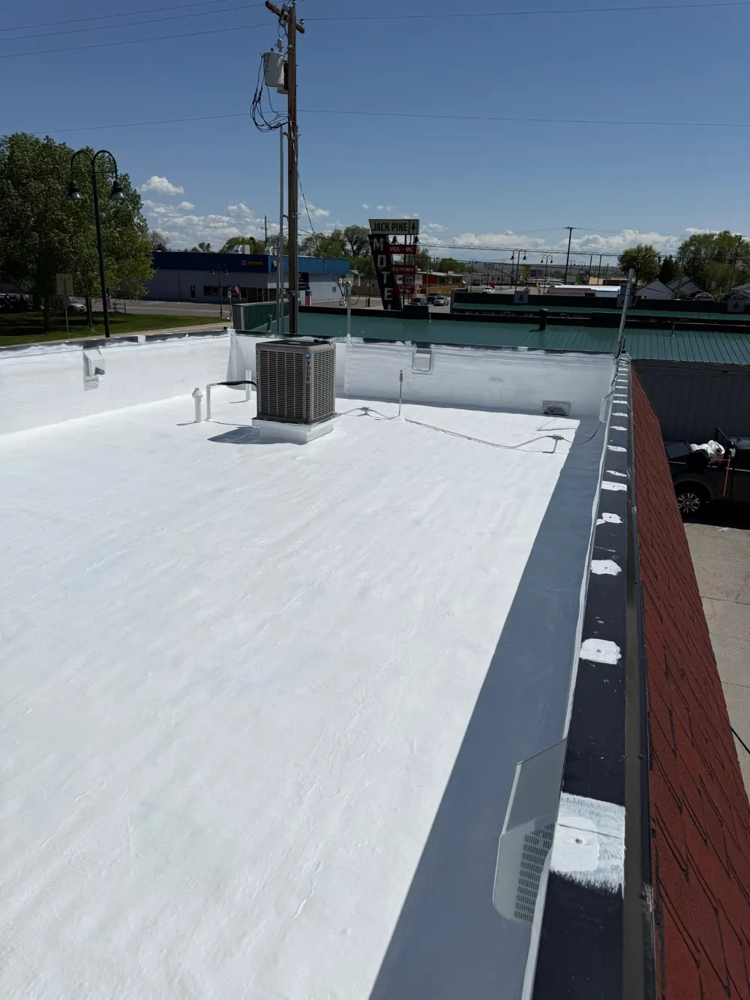

How we restore an existing roof
We clean the roof and seal the joints where vents, rooftop units, and walls meet the surface. On a fabric-reinforced roof, we work polyester fabric into the wet base coat before applying the reflective finish.
Can my roof be coated?A flat roof, before and after



Before you decide to coat
Get a free estimateCan my roof be coated?
We look at what the roof is made of, how it drains and whether earlier repairs have held. If you’ve had the same spot patched more than once, that’s worth pointing out when we look at it.
Which Conklin system would you use on my roof?
We’re an independent Conklin distributor. On a metal roof, we use a rust-inhibiting primer, reinforce the seams, and seal the fasteners. A fabric-reinforced system uses polyester fabric across the whole roof. The layers form a continuous waterproof surface once the coating cures.
Can my roof qualify for a 20-year warranty?
Eligible Conklin PUMA XL systems can qualify for a limited manufacturer’s warranty of up to 20 years. Conklin must approve the warranty application. We’ll go over the system, coverage, and term that apply to your building when we prepare your estimate.
Can we stay open during the work?
That depends on roof access and how you use the building. We’ll go over which entrances need to stay open and when deliveries come through before we agree on a schedule.